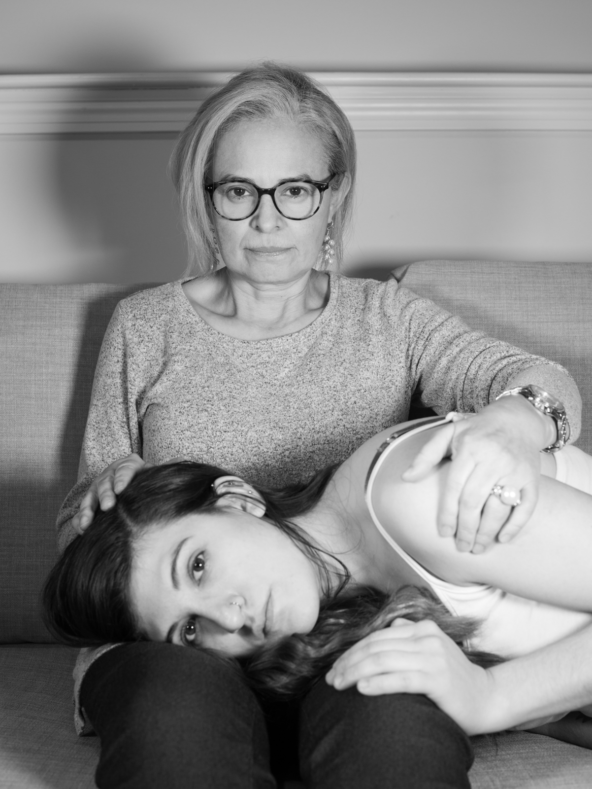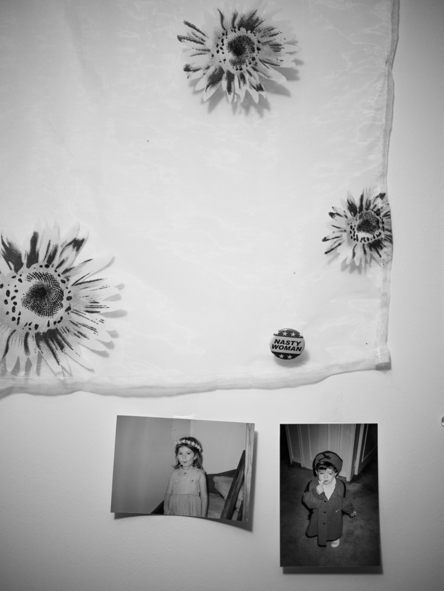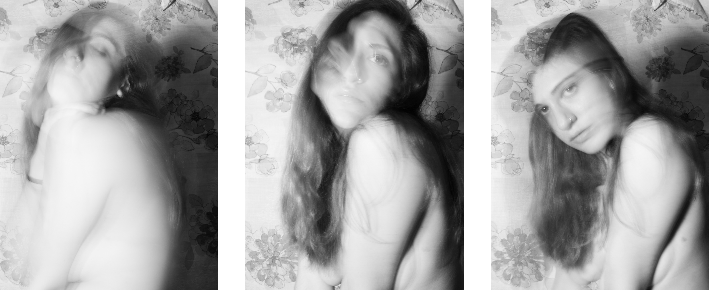
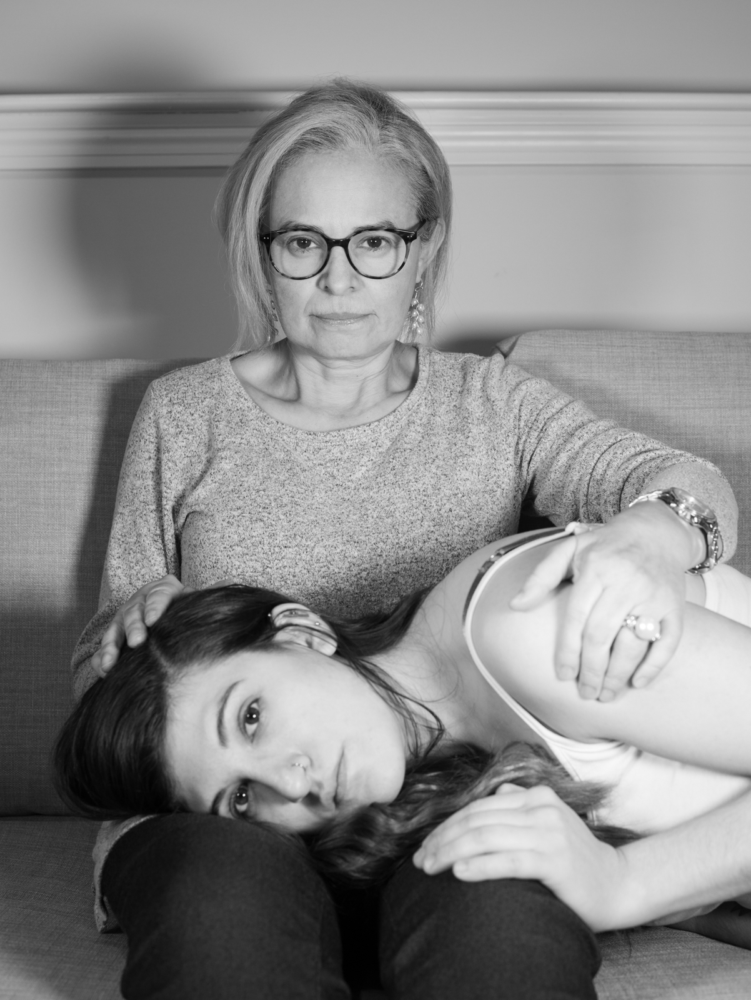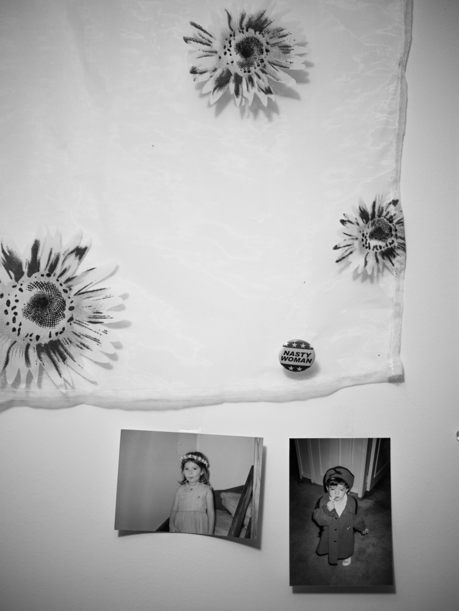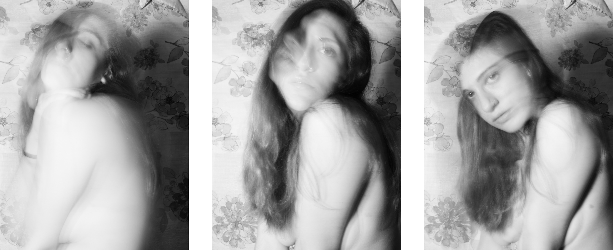
 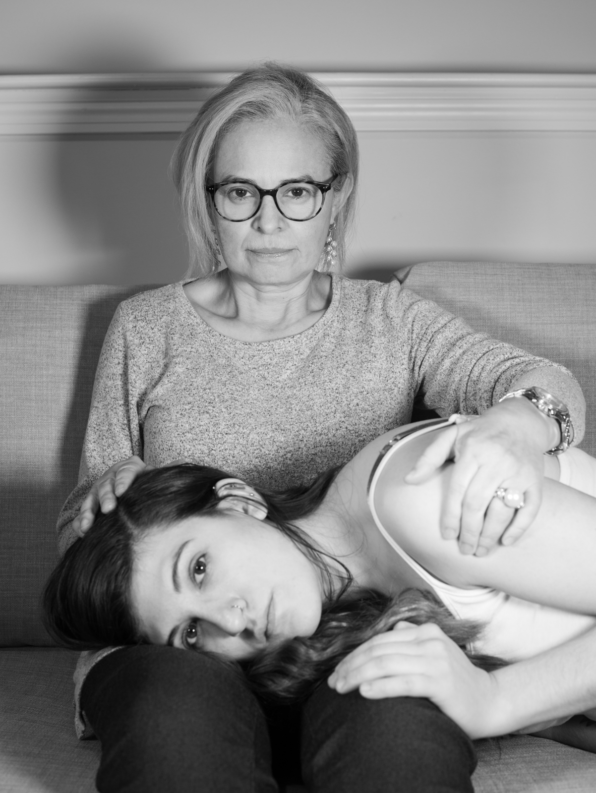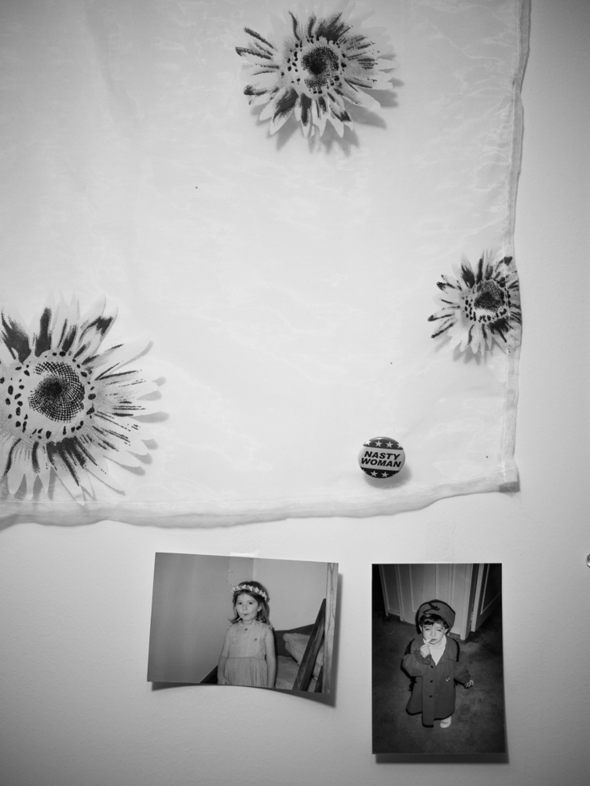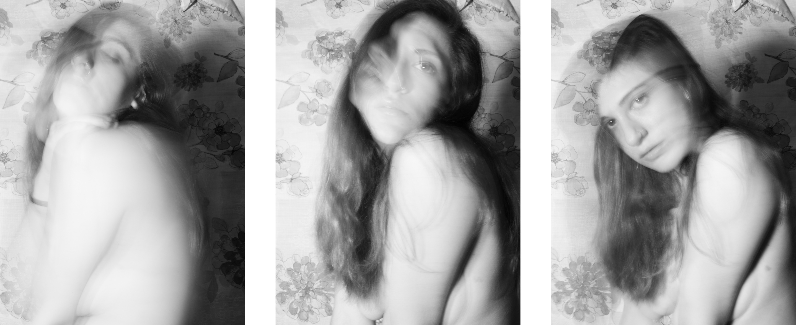
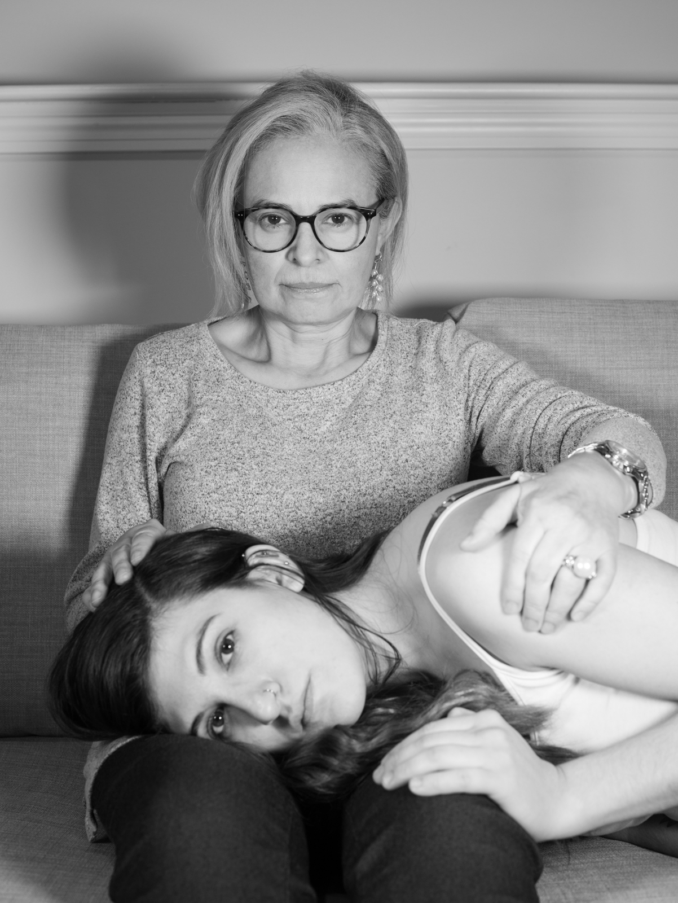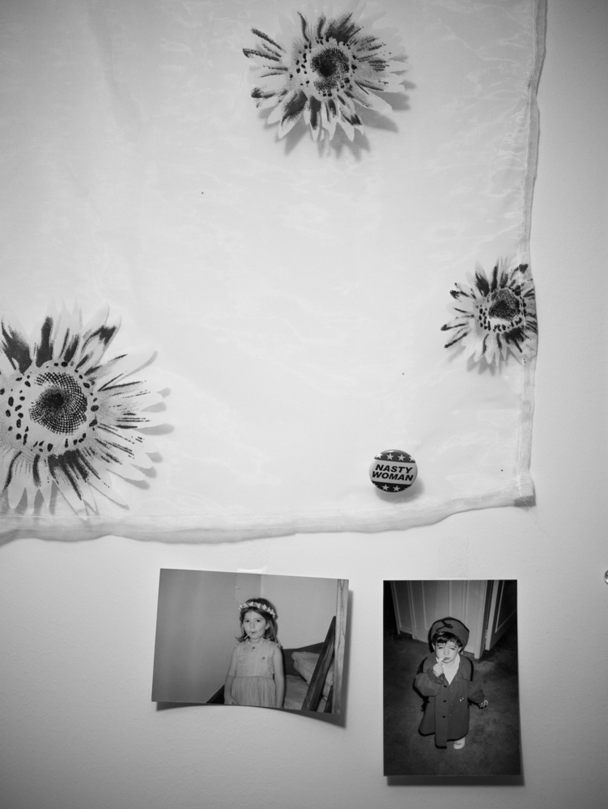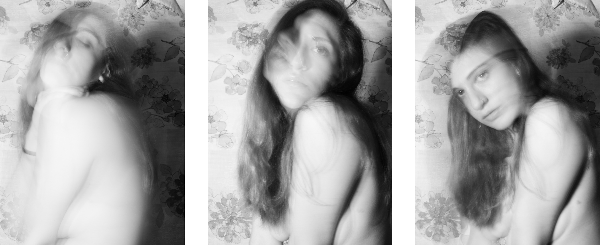biography
Ana Maria Torres is a visual artist and photographer from Bogota, Colombia. Her work addresses themes of racial alienation and the jarring cultural and personal shift that accompanies immigrating to a new country during adolescence. Through self-portraiture and images of nature, her senior thesis “In a State of Catharsis” explores identity and the fluidity of self, as well as the impact of trauma on personal growth and the process of healing.
interview
Ana Tores in conversation with Bella Bennett
BB: What is your background and how does it influence your work?
AT: I was born in Bogota, Columbia, and I immigrated to the US at age 13. My work is really heavily influenced by my background. The jarring shift between cultures has inspired a lot of work for me.
BB: What is your work about?
AT: My work addresses my history with emotional and mental abuse, mental illness. These topics are very cyclical. Through my work, I am addressing my past trauma and blooming into a stronger woman.
BB: How have you grown since beginning this project?
AT: I've struggled with how I portrayed myself. I was originally was very inspired by Femme Fatale, a trope that was created as a critique and villanization female agency post WWII. Women gained more independence by getting jobs leading to them becoming financially independent for the first time. A lot of the work is performative, so I struggled a lot to find a place where I could portray myself accurately and with dignity. The early title was “I’m not a victim, I’m a villain.” There’s a razor edge that could go either way, because women are so easily victimized and villainized for things that men do. I played between those two tropes until I found a comfortable spot where I was not playing into those types.
BB: What was your process for naming your project?
AT: I went through a lot of different titles. First was “Wildfire Bloom”, because I use a lot of nature imagery as metaphor in the project. I love using nature’s ability to grow as a metaphor for my personal growth. I wanted a name a little more personal that centered me in the work more, so I decided to use the word that I felt encapsulated the project, “catarthis”.
BB: What do you hope people take away viewing your work?
AT: I hope it resonates with other victims and survivors of emotional, psychological, and domestic abuse. I hope people can find a safe place like I have. I still struggle with thinking that people won’t believe me about what I have been through, and I want people to know that they can grow and prosper.
BB: What are your top influences?
AT: I am very influenced by classical music and music in general in the way it’s able to convey emotions without words. Film may be my biggest inspiration in the way it uses visuals to go along with a narrative. It doesn’t totally resemble real life but it has the time element that real life does. Art-wise, my influences are the Surrealist movement, Frida Khalo, and Francesca Woodman.
BB: How much do you think about gesture?
AT: It’s integral. A lot of times, the image is about the gesture that I am making. A lot of the images have just me as the body presence, so posing and the way I hold my body are really important.
BB: What does black and white vs color mean to you and your work?
AT: I started utilizing black and white to resemble Film Noir and the archetypes of the women in those movies. As a technique it more accurately depicts the strong emotions that I felt during both the abuse and the making of the image. Sometimes color can be too soft, too gentile. I also enjoy really harsh contrast and how that can show my state of mind.
BB: What role does your mom have in your images?
AT: It’s felt like both a collaborative and therapeutic effort with her. It's been cathartic hearing her experience with unhealthy and toxic relationships, which I never really knew of growing up. I now know that it’s important to pass this experience on to my future children. My mom had a stalker in college, in a time before there were conversations on that topic. If you believe the system is not on your side, it impacts how you grow. That was an impactful experience, and she believes in the importance of passing down our lessons, so that history will not be repeated
BB: What’s next for you?
AT: I want to make more work addressing that toxic relationship, for I feel like the work is not realized yet fully. From being in that relationship, I developed an eating disorder, and I haven't yet touched on that with my photography. Also, I want to make a body of work about the struggle of moving to America at such a hard age. In the future, I would love to work on movies. It would be amazing to work on a huge project and collaborative effort. I would also like to travel back to Columbia and document my family history. America’s been very diligent about keeping track of records and events (living and passing), but Columbia has not always been diligent about tracing familial records. I want to explore my family’s traces of the past and where they are presently.